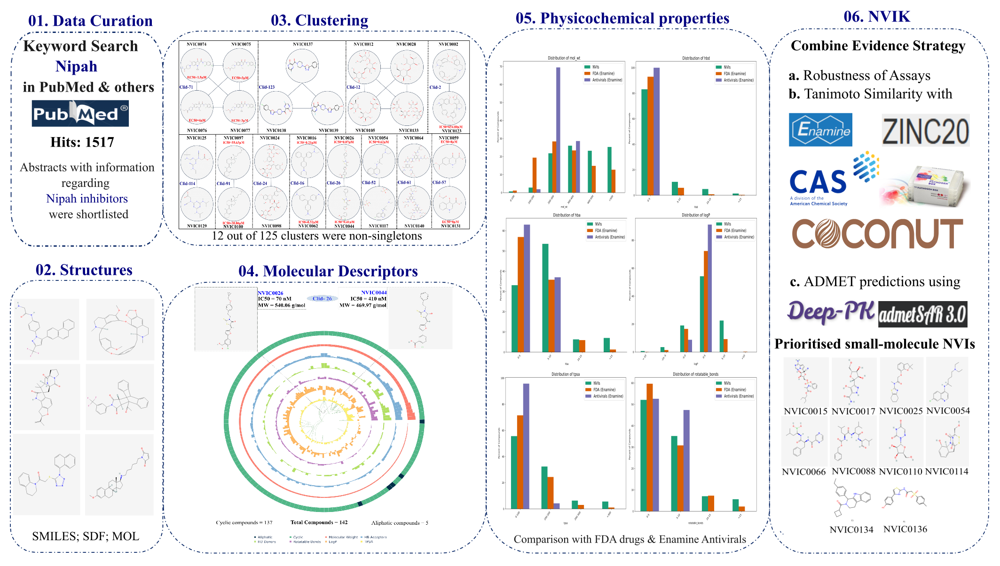

About Nipah Virus Inhibitor Knowledgebase (NVIK)

The latest information about Nipah virus can be accessed at the following resources:
WHO: Nipah Virus Factsheet
CDC: About Nipah Virus
NCDC India: Nipah Virus Guidelines